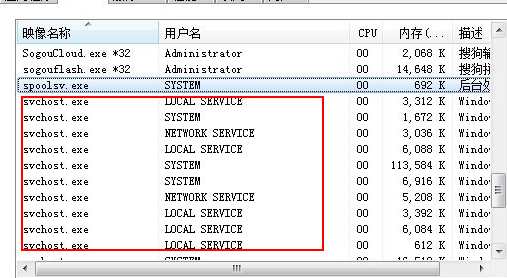

清除svchost.exe病毒
Svchost.exe 是从动态链接库 (DLL) 中运行的服务的通用主机进程名称。这个程序对系统的正常运行是非常重要，而且是不能被结束的。每一个Svchost. exe 进程以一个 Group(组)的方式分组管理各种服务

Svchost.exe在Windows XP的系统目录\Windows\System32\ 下，在启动的时候，Svchost.exe根据注册表中的相关信息建立一个 服务列表并根据这个列表加载相关的服务。一般来说，Svchost.exe 总是根据 HKEY_LOCAL_MACHINE\Software\Microsoft\WindowsNT\CurrentVersion\Svchost下面的键值分组管理DLL 申请的服务，这里的每一键值对应一个独立的Svchost.exe进程，也就是说这里的键值就是在任务管理器中我们看到的Svchost.exe进程
怎样清除svchost.exe病毒
步骤1、用unlocker删除类似于C:\SysDayN6这样的文件夹：例如C:\Syswm1i、C:\SysAd5D等等，这些文件夹有个共同特点，就是名称为 Sys*** (***是三到五位的随机字母)。
步骤2、开始——运行——输入“regedit”——打开注册表，展开注册表到以下位置：
1 | HKEY_CURRENT_USER\Software\Microsoft\Windows\CurrentVersion\Policies\Explorer\Run |
删除右边所有用纯数字为名的键，如<66>、<333>、<50>、<4>
步骤3、重新启动计算机，病毒清除完毕。
本博客所有文章除特别声明外，均采用 CC BY-NC-SA 4.0 许可协议。转载请注明来自 senu11！